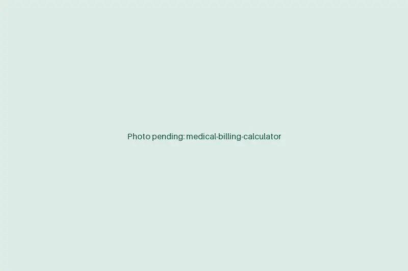

Medical billing support services that keep claims moving
When charge entry lags and denials sit unworked, cash slows and A/R ages past the point of recovery. Our remote billers work alongside your team or your billing company to post, scrub, follow up and clean up.
Book a discovery callAt a glance
- Works in
- Your PM system, clearinghouse and payer portals
- Fits with
- In-house billers or an outside billing company
- Reports
- Weekly A/R and denial summary
- Starts
- About two weeks from kickoff

Billing work our team takes on
Take the whole list or just the part that's falling behind. Coding decisions stay with your providers and coders.
Charge entry
Enter charges from the EMR or encounter forms, checking codes, modifiers and units against what was documented.
Claim scrubbing
Clear clearinghouse edits and payer rejections before they become denials.
Payment posting
Post ERAs and paper EOBs, and flag underpayments against your fee schedule.
Denial follow-up
Work denials by reason code: correct and resubmit, or prepare the appeal.
A/R cleanup
Work aged claims by payer and bucket, starting with balances most likely to pay.
Patient balance support
Prepare statements, answer billing calls and set up payment plans by your policy.
How we plug into your revenue cycle
The first few weeks run on two tracks: keep today's claims moving while the old ones get worked.
- Days 1 to 3
Pull the numbers
We review an A/R aging report and denial list to see where money is stuck.
- Days 4 to 6
Split the work
Decide which tasks we own and which stay with your team or billing vendor.
- Week 2
Clean up first
Start on the oldest collectible balances while daily work runs in parallel.
- Ongoing
Report weekly
A short summary shows what was worked, what paid and what needs your decision.
What cleaner books look like
Billing support is measured in days and dollars, so we report on both.
For your practice
- Charges out the door sooner after each visit.
- Denials worked while they're still inside the payer's filing window.
- An A/R report you can trust. [STAT: e.g. change in A/R over 90 days]
- Your in-house billers focused on the accounts that need judgment.
For your patients
- Accurate statements without later corrections.
- Someone who answers when they call about a bill.
- Payment plans set up clearly and on your terms.
Billing data stays in your PM system
Billers see demographics, diagnoses and payment data. None of it leaves your systems.
- Work in your PM and clearinghouseBillers post, scrub and follow up inside your PM system, clearinghouse and payer portals.
- No local filesEOBs, reports and statements are never saved to the workstation.
- Downloads and printing disabledStaff machines block printing, downloads and removable storage.
- Access you controlEach biller has a personal login you issue, with permissions you set.
- Signed BAAA Business Associate Agreement is signed before any account access.
Medical billing support FAQs
How is medical billing support priced?
A flat monthly rate for biller hours, not a percentage of collections. That keeps the cost predictable whether you have us on daily work, cleanup or both.
Which billing systems do you work in?
Your current setup, including PM systems such as athenahealth, eClinicalWorks, NextGen, AdvancedMD and Tebra, and clearinghouses such as Availity, Waystar and Office Ally.
How quickly are charges and denials worked?
Charges are entered within one business day of the note being signed, and new denials are reviewed within the week they post. Cleanup targets are agreed on the discovery call.
Is outsourced billing support HIPAA compliant?
It is when access is set up properly. We sign a BAA, work only in your systems under named logins, and disable printing, downloads and local storage on every workstation.
Do your billers work our hours?
Yes. Billers work your business hours in your time zone, so payer calls happen while payers are open and your team can reach them.
Show us your A/R aging
Send a current aging report and a denial summary. We'll point out where money is stuck and what it would take to move it.
Book a discovery call